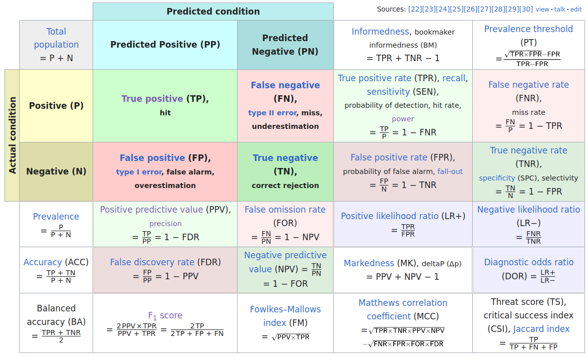

matrix(data = 1:6, nrow = 2) [,1] [,2] [,3]
[1,] 1 3 5
[2,] 2 4 6Isn’t that a data frame?
matrix(data = 1:6, nrow = 2) [,1] [,2] [,3]
[1,] 1 3 5
[2,] 2 4 6matrix(data = 1:6, ncol = 2) [,1] [,2]
[1,] 1 4
[2,] 2 5
[3,] 3 6matrix(data = 1:6, nrow = 3) [,1] [,2]
[1,] 1 4
[2,] 2 5
[3,] 3 6matrix(data = 1:6, nrow = 3, byrow = TRUE) [,1] [,2]
[1,] 1 2
[2,] 3 4
[3,] 5 6In the following, we say \(S\) is the sample space which is a set of atomic events.
Example for sample spaces:
. . .
An event \(A\) is a subset of the sample space \(A \subset S\).
Important: Atomic events are events but not all events are atomic.
Two coin tosses:
. . .
For selecting one random person:
Event \(\{2,5,6\}\) = The selected person is either 2, 5, or 6.
(Not all three people which is a different random variable!)
. . .
For COVID-19 testing:
Examples
. . .
choose(5,2)[1] 10These are typical problems of combinatorics, the theory of counting.
Definition: A set of all events a function \(\text{Pr}: \text{Set of all subsets of $S$} \to \mathbb{R}\) is a probability function when
This captures the essence of how we think about probabilities mathematically. Most important: We can only easily add probabilities when they do not share atomic events.
Example coin tosses: We can define a probability function \(\text{Pr}\) by assigning the same probability to each atomic event.
. . .
So, the probability one or zero HEADs is \(\text{Pr}(\{HT, TH, TT\}) = \text{Pr}(\{HT\}) + \text{Pr}(\{TH\}) + \text{Pr}(\{TT\}) = \frac{3}{4}\).
. . .
Example selection of two out of five people: We can define a probability function \(\text{Pr}\) by assigning the same probability to each atomic event.
. . .
So, the probability that 1 is among the selected \(\text{Pr}(\{12, 13, 14, 15\}) = \frac{4}{10}\).
We can compute the probabilities of all events by summing the probabilities of the atomic events in it. So, the probabilities of the atomic events are building blocks for the whole probability function.
\(\text{Pr}(\emptyset) = 0\)
For any events \(A,B \subset S\) it holds


. . .
Recap from the motivation of logistic regression: When the probability of an event is \(A\) is \(\text{Pr}(A)=p\), then its odds (in favor of the event) are \(\frac{p}{1-p}\). The logistic regression model “raw” predictions are log-odds \(\log\frac{p}{1-p}\).
Definition: The conditional probability of an event \(A\) given an event \(B\) (write “\(A | B\)”) is defined as
\[\text{Pr}(A|B) = \frac{\text{Pr}(A \cap B)}{\text{Pr}(B)}\]

We want to know the probability of \(A\) given that we know that \(B\) has happened (or is happening for sure).
Two coin flips: \(A\) = “first coin is HEAD”, \(B\) = “one or zero HEADS in total”. What is \(\text{Pr}(A|B)\)? \(A\) = {HH, HT}, \(B\) = {TT, HT, TH} \(\to\) \(A \cap B = \{HT\}\)
\(\to\) \(\text{Pr}(A\cap B) = \frac{3}{4}\), \(\text{Pr}(A\cap B) = \frac{1}{4}\)
\(\to\) \(\text{Pr}(A|B) = \frac{1/4}{3/4} = \frac{1}{3}\)
COVID-19 Example: What is the probability that a random person in the tested sample has COVID-19 (event \(P\) “positive”) given that she has a positive test result (event \(PP\) “predicted positive”)?
\[\text{Pr}(P|PP) = \frac{\text{Pr}(P \cap PP)}{\text{Pr}(PP)}\]
Definition p-value: Probability of observed or more extreme outcome given that the null hypothesis (\(H_0\)) is true.
\[\text{p-value} = \text{Pr}(\text{observed or more extreme outcome for test-statistic} | H_0)\]
Confusion matrix of statistical classification, large version:


Sensitivity and Specificity
\(\to \atop \ \) Sensitivity is the true positive rate: TP / (TP + FN)
\(\ \atop \to\) Specificity is the true negative rate: TN / (TN + FP)
Positive/negative predictive value
\(\scriptsize\downarrow \ \) Positive predictive value: TP / (TP + FP)
\(\scriptsize\ \downarrow\) Negative predictive value: TN / (TN + FN)
Here TP, TN, FP, FN are the numbers of true positives, true negatives, false positives, and false negatives.
As the set of atomic events \(\{TP\}, \{FP\}, \{FN\}, \{TN\}\) we can define the probabilities of the events like \(\text{Pr}(\{TP\}) = \frac{TP}{N}\) with \(N = TP + FP + FN + TN\).
Sensitivity and specificity are conditional probabilities:
Sensitivity is the probability of a positive test result given that the person has the condition: \(\text{Pr}(PP|P) = \frac{TP}{TP + FN}\)
Specificity is the probability of a negative test result given that the person does not have the condition: \(\text{Pr}(PN|N) = \frac{TN}{TN + FP}\)
Positive predictive value is the probability of the condition given that the test result is positive: \(\text{Pr}(P|PP) = \frac{TP}{TP + FP}\)
Negative predictive value is the probability of the condition given that the test result is negative: \(\text{Pr}(N|PN) = \frac{TN}{TN + FN}\)
Note: The positive predictive value \(\text{Pr}(P|PP)\) is sensitivity \(\text{Pr}(PP|P)\) with “flipped” conditionality.
Bayes’ Theorem is a fundamental theorem in probability theory that relates the conditional probabilities \(\text{Pr}(A|B)\) and \(\text{Pr}(B|A)\) to the marginal probabilities \(\text{Pr}(A)\) and \(\text{Pr}(B)\):
\[\text{Pr}(A|B) = \frac{\text{Pr}(B|A) \cdot \text{Pr}(A)}{\text{Pr}(B)}\]
. . .
Example: What is the probability that a random person in the tested sample has COVID-19 (\(P\) = positive) given that she has a positive test result (\(PP\) = predicted positive)?
\[\text{Pr}(P|PP) = \frac{\text{Pr}(PP|P) \cdot \text{Pr}(P)}{\text{Pr}(PP)}\] So, we can compute the positive predictive value \(\text{Pr}(P|PP)\) from the sensitivity \(\text{Pr}(PP|P)\) and the rate (or probability) of positive conditions \(\text{Pr}(P)\) and the rate (or probability) of positive tests.
\[\text{Pr}(P) = \frac{P}{N} = \frac{TP + FN}{N}\]
Sensitivity and Specificity are properties of the test (or classifier) and are independent of the prevalence of the condition in the population of interest.
The Positive/Negative Predictive Values are not!
We assume a test with sensitivity 0.9 and specificity 0.99. \(N = 1000\) people were tested.
| PP | PN | |
|---|---|---|
| P | TP | FN |
| N | FP | TN |
Sensitivity = TP / P
Specificity = TN / N
PPV = TP / PP
Prevalence = P / N
Prevalence = 0.1
\(P\) = 100 \(N\) = 900
| PP | PN | |
|---|---|---|
| P | 90 | 10 |
| N | 9 | 891 |
PPV = 90 / (90 + 9) = 0.909
From the positive tests 90.9% have COVID-19.
Prevalence = 0.01
\(P\) = 10 \(N\) = 990
| PP | PN | |
|---|---|---|
| P | 9 | 1 |
| N | 9.9 | 980.1 |
PPV = 9 / (9 + 9.9) = 0.476
From the positive tests only 47.6% have COVID-19!
Mathematicall called “n choose k” \({n \choose k} =\frac{n!}{(n-k)!k!}\). Here: \({5\choose 2}\).↩︎